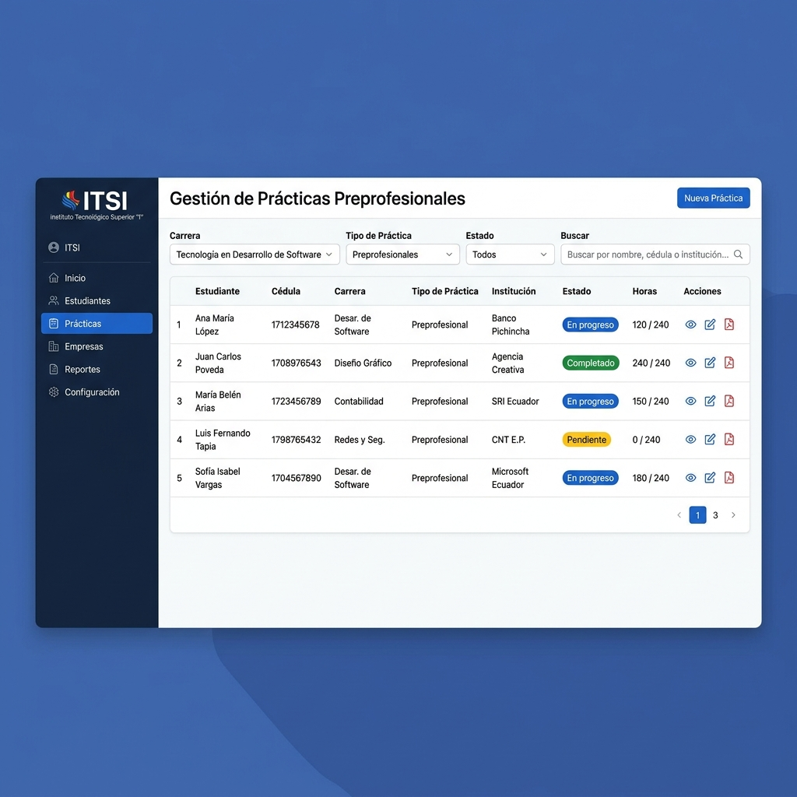
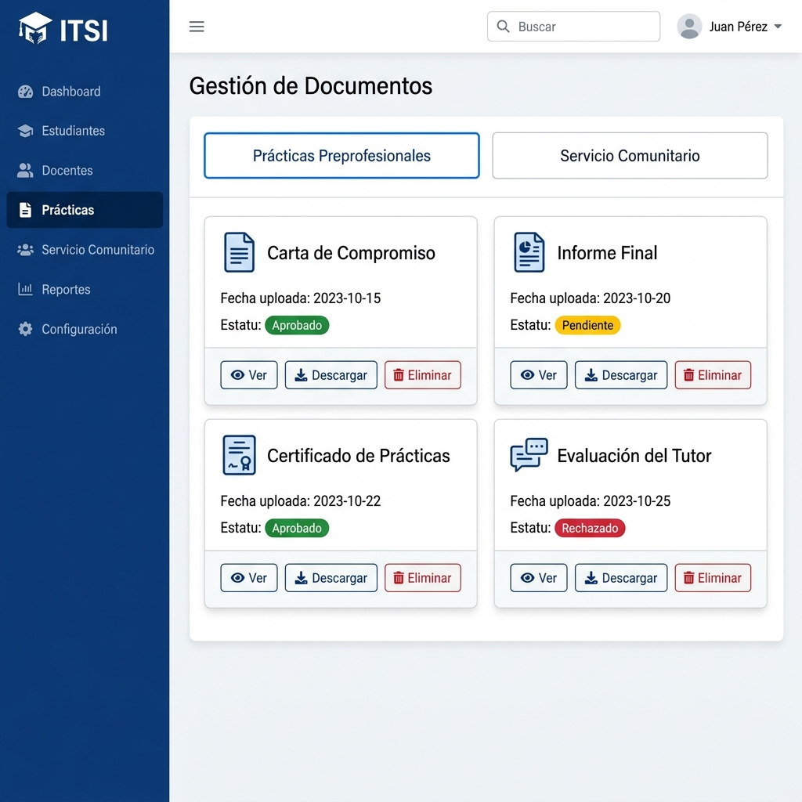

Tabla de Contenidos
1. Introducción
El presente Manual de Usuario tiene como finalidad guiar a los usuarios del Sistema de Vinculación ITSI en el uso correcto y eficiente de todas las funcionalidades que ofrece la plataforma. Este documento está dirigido a los tres perfiles de usuario que interactúan con el sistema: Coordinadores, Docentes y Estudiantes.
El Sistema de Vinculación ITSI es una aplicación web desarrollada para el Instituto Superior Tecnológico Ibarra, diseñada para gestionar de manera integral los procesos de vinculación con la sociedad. Centraliza y automatiza la administración de prácticas preprofesionales, servicio comunitario, convenios institucionales, educación continua, evaluaciones, documentación y reportes.
1.1 ¿A quién está dirigido?
| Perfil | Descripción |
|---|---|
| Coordinador | Administrador del departamento de vinculación. Tiene acceso completo a todas las funcionalidades del sistema. |
| Docente | Tutor académico que supervisa prácticas de estudiantes y gestiona actividades de educación continua. |
| Estudiante | Realiza prácticas preprofesionales y/o servicio comunitario. Gestiona su documentación y actividades. |
1.2 Convenciones del Manual
| Elemento | Significado |
|---|---|
| Texto en negrita | Nombres de botones, menús o elementos importantes de la interfaz |
Texto en código | URLs, rutas o datos que el usuario debe ingresar |
| Cuadro azul | Información adicional o sugerencias útiles |
| Cuadro amarillo | Advertencias o precauciones importantes |
| Cuadro verde | Confirmaciones o mensajes de éxito |
2. Objetivo del Sistema
El Sistema de Vinculación ITSI tiene como objetivo principal proporcionar una plataforma web centralizada que permita gestionar de manera eficiente todos los procesos relacionados con la vinculación con la sociedad del Instituto Superior Tecnológico Ibarra.
2.1 Objetivos Generales
- Centralizar la gestión de prácticas preprofesionales y servicio comunitario en una sola plataforma
- Automatizar el seguimiento de convenios institucionales, con alertas de vencimiento y control de plazas disponibles
- Facilitar la gestión documental de todos los procesos de vinculación, con estados de revisión y formatos descargables
- Proporcionar reportes y estadísticas en tiempo real para la toma de decisiones
- Gestionar evaluaciones de prácticas y enlaces institucionales de forma estructurada
- Administrar actividades de educación continua: cursos, talleres, capacitaciones e inscripciones
- Notificar oportunamente a todos los actores involucrados en los procesos
2.2 Beneficios para cada Rol
Coordinador Beneficios
- Visión integral del departamento a través del Dashboard con gráficos y estadísticas
- Control total sobre prácticas, convenios, instructores y estudiantes
- Generación de reportes en PDF, Excel y CSV con filtros avanzados
- Respaldo y restauración de la base de datos del sistema
- Gestión de evaluaciones y seguimiento académico
Docente Beneficios
- Seguimiento en tiempo real del progreso de sus estudiantes asignados
- Gestión de actividades de educación continua propias
- Visualización de evaluaciones y calificaciones
- Recepción de notificaciones sobre cambios en prácticas asignadas
Estudiante Beneficios
- Acceso rápido a la documentación requerida para sus prácticas
- Descarga de formatos oficiales para prácticas preprofesionales y servicio comunitario
- Consulta de convenios institucionales disponibles
- Inscripción en actividades de educación continua
- Visualización de evaluaciones y progreso académico
3. Requisitos para el Uso del Sistema
3.1 Requisitos de Hardware
| Componente | Mínimo | Recomendado |
|---|---|---|
| Procesador | Dual Core 1.5 GHz | Cualquier procesador moderno |
| Memoria RAM | 2 GB | 4 GB o más |
| Resolución de pantalla | 1024 x 768 px | 1366 x 768 px o superior |
| Conexión a Internet | 1 Mbps | 5 Mbps o superior |
3.2 Requisitos de Software
| Software | Versión Requerida | Notas |
|---|---|---|
| Navegador Web | Google Chrome 90+, Mozilla Firefox 90+, Microsoft Edge 90+ | Se recomienda la última versión disponible |
| Sistema Operativo | Windows 10/11, macOS, Linux, Android, iOS | Cualquier SO con navegador compatible |
| Lector PDF | Adobe PDF Reader o navegador | Para visualizar reportes generados |
| Microsoft Excel / LibreOffice | Cualquier versión | Para abrir reportes en formato Excel |
3.3 Credenciales de Acceso
Para acceder al sistema, cada usuario debe contar con:
- Usuario: Cédula de identidad o nombre de usuario asignado por el Coordinador
- Contraseña: Contraseña personal proporcionada por el administrador del sistema
4. Acceso al Sistema (Inicio de Sesión)
4.1 Ingresar al Sistema
Abrir el navegador web
Abrir su navegador preferido (Chrome, Firefox o Edge) e ingresar la dirección del sistema en la barra de direcciones:
http://localhost/ITSI/public/Si el sistema está desplegado en un servidor, utilice la URL proporcionada por el administrador (ejemplo: https://vinculacion.itsi.edu.ec/).
Pantalla de Inicio de Sesión
Se mostrará la pantalla de login del Sistema de Vinculación. Esta pantalla contiene:
- Logo del Instituto Superior Tecnológico Ibarra
- Título "Sistema de Vinculación"
- Campo Usuario o Cédula
- Campo Contraseña (con opción de mostrar/ocultar)
- Opción "Recordarme" para guardar el usuario
- Enlace "¿Olvidaste tu contraseña?"
- Botón "INGRESAR"

Ingresar credenciales
Escribir su usuario o cédula en el primer campo y su contraseña en el segundo campo. Puede hacer clic en el icono del ojo (👁) para visualizar la contraseña mientras la escribe.
Hacer clic en "INGRESAR"
Se validarán las credenciales y será redirigido al Dashboard correspondiente a su rol (Coordinador, Docente o Estudiante).
4.2 Opción "Recordarme"
Al marcar la casilla "Recordarme", el sistema guardará su nombre de usuario en el navegador para que no tenga que ingresarlo cada vez que acceda. Esta función utiliza almacenamiento local del navegador y no guarda la contraseña.
4.3 Recuperación de Contraseña
Si olvidó su contraseña, siga estos pasos:
En la pantalla de login, haga clic en el enlace "¿Olvidaste tu contraseña?"
Ingrese su correo electrónico registrado en el sistema
Haga clic en "Enviar enlace de recuperación"
Revise su bandeja de entrada (y carpeta de spam). Recibirá un correo con un enlace para restablecer su contraseña.
Haga clic en el enlace del correo, ingrese su nueva contraseña y confírmela.

4.4 Cerrar Sesión
Para cerrar sesión de forma segura:
- Haga clic en su foto de perfil en la esquina superior derecha de la barra de navegación
- Se desplegará un menú con opciones: Mi Perfil, Mi Cuenta y Cerrar sesión
- Haga clic en el botón rojo "Cerrar sesión"
- Será redirigido a la pantalla de login con un mensaje confirmando que la sesión se cerró correctamente
5. Descripción de los Módulos del Sistema
El sistema se organiza en módulos funcionales. Cada rol tiene acceso a módulos específicos según sus atribuciones. A continuación se detalla cada módulo.
5.1 Dashboard (Panel de Control)
Acceso: Coordinador Docente Estudiante
Es la pantalla principal que se muestra al iniciar sesión. Presenta un resumen visual con tarjetas de estadísticas y gráficos interactivos (generados con ApexCharts) según el rol del usuario:
- Coordinador: Total de estudiantes, prácticas activas, convenios vigentes, instructores registrados, actividades educativas. Gráficos de distribución por carreras, estados de prácticas y tendencias.
- Docente: Resumen de estudiantes asignados, prácticas bajo tutorías y actividades educativas propias.
- Estudiante: Estado de sus prácticas, documentos pendientes, próximas actividades y evaluaciones.

5.2 Prácticas (Preprofesionales y Servicio Comunitario)
Acceso: Coordinador Docente Estudiante
Módulo central del sistema para la gestión integral de las prácticas. Incluye:
- Creación y asignación de prácticas preprofesionales y de servicio comunitario
- Asignación de estudiantes a prácticas con instructor y tutor docente
- Seguimiento del progreso de cada práctica con estados (pendiente, en progreso, finalizada)
- Registro de asistencias y actividades realizadas
- Filtros por carrera, periodo académico, estado y tipo de práctica
- Reportes de prácticas en formato PDF y Excel

5.3 Documentos
Acceso: Coordinador Estudiante
Gestiona toda la documentación asociada a las prácticas. Se divide en dos secciones:
- Documentos de Prácticas Preprofesionales: Solicitudes, informes, certificados y demás documentos requeridos
- Documentos de Servicio Comunitario: Documentación específica del servicio comunitario
Funcionalidades principales:
- Subida de documentos por parte de los estudiantes
- Revisión y cambio de estados por parte del Coordinador (Pendiente, Aprobado, Rechazado, Requiere corrección)
- Descarga de formatos oficiales proporcionados por el departamento
- Historial de revisiones y observaciones

5.4 Convenios
Acceso: Coordinador Estudiante
Administra los convenios con instituciones externas para prácticas y servicio comunitario:
- Registro de instituciones con convenio (nombre, tipo de institución, contacto)
- Detalles de cada convenio: vigencia, plazas disponibles, tipo de convenio
- Alertas de vencimiento de convenios
- Reportes de convenios activos, vencidos y por vencer
- Los estudiantes pueden consultar los convenios vigentes para conocer las instituciones disponibles
5.5 Instructores
Acceso: Coordinador
Gestión de instructores internos y externos que supervisan las prácticas:
- Registro de instructores con datos personales y tipo (interno/externo)
- Asignación de instructores a empleados del instituto
- Tipos de instructores configurables
- Listado y búsqueda de instructores
5.6 Estudiantes
Acceso: Coordinador
Módulo para la gestión del catálogo de estudiantes:
- Listado de estudiantes registrados con datos personales y académicos
- Búsqueda y filtrado por carrera, estado y periodo
- Visualización del historial de prácticas de cada estudiante
5.7 Evaluaciones
Acceso: Coordinador Docente Estudiante
Módulo de evaluaciones que incluye:
- Evaluaciones de prácticas preprofesionales: Calificación del desempeño del estudiante durante la práctica
- Evaluaciones de enlaces: Evaluación de las instituciones y enlaces donde se realizan las prácticas
- Reportes de evaluaciones: Gráficos y estadísticas de resultados con filtros por periodo, carrera y tipo
5.8 Educación Continua
Acceso: Coordinador Docente Estudiante
Gestión de actividades de educación continua del departamento:
- Creación y edición de actividades (cursos, talleres, seminarios, capacitaciones)
- Calendario de actividades con fechas de inicio y fin
- Gestión de participantes e inscripciones
- Control de cupos y estados de las actividades
- Reportes de actividades educativas en PDF
5.9 Reportes
Acceso: Coordinador Docente
Generación de reportes en múltiples formatos:
- PDF (generados con TCPDF): Reportes formales con logos institucionales
- Excel (generados con PhpSpreadsheet): Datos tabulares para análisis
- CSV: Exportación de datos para procesamiento externo
Los reportes incluyen filtros por: periodo académico, carrera, estado, tipo de práctica, rango de fechas.
5.10 Notificaciones
Acceso: Docente Estudiante
Sistema de notificaciones que informa sobre eventos relevantes:
- Notificaciones de nuevas asignaciones de prácticas
- Alertas de documentos aprobados, rechazados o que requieren corrección
- Avisos de vencimientos y plazos
- Marcado individual como leídas
- Filtrado por tipo de notificación
5.11 Backup (Respaldo)
Acceso: Coordinador
Módulo exclusivo del Coordinador para proteger la información del sistema:
- Creación de respaldos de la base de datos con un clic
- Historial de backups realizados con fecha y tamaño
- Descarga de archivos de respaldo
- Restauración de la base de datos desde un backup previo
5.12 Perfil y Cuenta
Acceso: Coordinador Docente Estudiante
- Mi Perfil: Visualización y edición de datos personales (nombre, teléfono, dirección) y foto de perfil
- Mi Cuenta: Cambio de contraseña. Se requiere ingresar la contraseña actual y la nueva contraseña dos veces
6. Uso de las Funcionalidades Principales
Esta sección describe paso a paso cómo utilizar las funcionalidades más importantes del sistema, organizadas por rol de usuario.
6.1 Funcionalidades del Coordinador
6.1.1 Navegación General
Al iniciar sesión como Coordinador, el sistema muestra:
- Barra lateral izquierda (Sidebar): Menú principal con las siguientes secciones:
- INICIO: Dashboard
- ESTUDIANTES: Listado de estudiantes
- EDUCACIÓN CONTINUA: Actividades educativas e Instructores
- PRÁCTICAS: Prácticas Asignadas, Documentos Preprofesionales, Documentos Servicio Comunitario, Convenios
- BACKUP: Respaldo de base de datos
- Barra superior (Navbar): Muestra el nombre del usuario, foto de perfil con menú desplegable (Mi Perfil, Mi Cuenta, Cerrar sesión)
6.1.2 Crear una Nueva Práctica
Ir a Prácticas Asignadas en el menú lateral
Hacer clic en el botón "Nueva Práctica" o "Agregar"
Completar el formulario: seleccionar tipo de práctica (preprofesional/servicio comunitario), periodo académico, estudiante, institución de convenio, instructor y tutor docente
Hacer clic en "Guardar" para registrar la práctica
6.1.3 Gestionar Convenios
Ir a Convenios en el menú lateral
Para agregar una institución: clic en "Nueva Institución", llenar los datos (nombre, tipo, dirección, contacto) y guardar
Para agregar un convenio a una institución: seleccionar la institución, clic en "Nuevo Convenio", definir la vigencia, plazas disponibles y tipo de convenio
Para generar reportes: utilizar los filtros disponibles y clic en "Exportar PDF" o "Exportar Excel"
6.1.4 Revisar Documentos de Estudiantes
Ir a Documentos - Preprofesionales o Documentos - Servicio Comunitario
Buscar al estudiante o filtrar por estado de documentos
Descargar y revisar el documento subido por el estudiante
Cambiar el estado del documento: Aprobado, Rechazado o Requiere corrección, agregando observaciones si es necesario
6.1.5 Crear Actividad de Educación Continua
Ir a Actividades educativas en la sección EDUCACIÓN CONTINUA
Clic en "Nueva Actividad"
Completar: nombre, tipo (curso/taller/seminario), fechas, cupos, instructor asignado y descripción
Guardar la actividad. Los participantes podrán inscribirse desde sus respectivos paneles.
6.1.6 Realizar Backup de la Base de Datos
Ir a Backup en el menú lateral
Clic en "Crear Backup" para generar un respaldo de la base de datos
El backup aparecerá en el historial con fecha, hora y tamaño del archivo
Puede descargar el archivo de respaldo o restaurar la base de datos desde un backup anterior
6.2 Funcionalidades del Docente
6.2.1 Navegación del Docente
El menú lateral del docente contiene:
- INICIO: Dashboard con resumen de actividades
- EDUCACIÓN CONTINUA: Mis cursos (actividades asignadas como instructor)
- PRÁCTICAS: Prácticas asignadas como tutor
La barra superior muestra también las notificaciones y el menú de perfil/cuenta.
6.2.2 Consultar Prácticas Asignadas
Ir a Prácticas en el menú lateral
Se mostrará el listado de estudiantes y prácticas asignadas como tutor
Puede ver el detalle de cada práctica: estudiante, institución, horas completadas, estado y progreso
6.2.3 Gestionar Mis Cursos (Educación Continua)
Ir a Mis cursos en EDUCACIÓN CONTINUA
Visualizar las actividades educativas donde es instructor
Gestionar la lista de participantes, seguimiento de asistencia y evaluaciones
6.3 Funcionalidades del Estudiante
6.3.1 Navegación del Estudiante
El menú lateral del estudiante contiene:
- INICIO: Dashboard
- EDUCACIÓN CONTINUA: Cursos y evaluaciones, Convenios
- PRÁCTICAS PREPROFESIONALES: Documentación, Formatos
- PRÁCTICAS DE SERVICIO COMUNITARIO: Documentación, Formatos
6.3.2 Subir Documentos de Prácticas
Ir a Documentación en la sección de prácticas correspondiente (Preprofesionales o Servicio Comunitario)
Ver el listado de documentos requeridos con su estado actual
Clic en "Subir documento" junto al tipo de documento que desea cargar
Seleccionar el archivo desde su computadora y hacer clic en "Enviar"
El documento quedará en estado "Pendiente de revisión" hasta que el Coordinador lo revise
6.3.3 Descargar Formatos Oficiales
Ir a Formatos en la sección de prácticas correspondiente
Se mostrará el listado de formatos disponibles para descarga
Clic en "Descargar" junto al formato que necesita
6.3.4 Consultar Convenios Disponibles
Ir a Convenios en el menú lateral
Se mostrará el listado de instituciones con convenio vigente
Consultar los detalles: tipo de institución, plazas disponibles y vigencia del convenio
6.3.5 Inscribirse en Actividades de Educación Continua
Ir a Cursos y evaluaciones en EDUCACIÓN CONTINUA
Ver el listado de actividades disponibles (cursos, talleres, seminarios)
Seleccionar la actividad de interés y clic en "Inscribirse"
6.3.6 Consultar Notificaciones
Las notificaciones se muestran en la barra superior del sistema con un indicador numérico
Clic en el icono de notificaciones para ver el listado
Clic en cada notificación para ver el detalle o marcarla como leída
6.4 Funcionalidades Comunes a Todos los Roles
6.4.1 Editar Perfil
Clic en la foto de perfil en la barra superior → seleccionar "Mi Perfil"
Se mostrará su información personal actual
Modifique los campos que desee actualizar (teléfono, dirección, etc.)
Para cambiar la foto de perfil: clic en la imagen actual, seleccionar una nueva foto y confirmar
Clic en "Guardar cambios"
6.4.2 Cambiar Contraseña
Clic en la foto de perfil → seleccionar "Mi Cuenta"
Ingresar la contraseña actual
Ingresar la nueva contraseña y confirmarla
Clic en "Actualizar contraseña"
6.5 Resumen de Acceso por Rol
| Módulo / Funcionalidad | Coordinador | Docente | Estudiante |
|---|---|---|---|
| Dashboard | ✅ | ✅ | ✅ |
| Gestión de Estudiantes | ✅ | — | — |
| Prácticas (crear/asignar) | ✅ | — | — |
| Prácticas (consultar/seguimiento) | ✅ | ✅ | ✅ |
| Documentos (revisar/aprobar) | ✅ | — | — |
| Documentos (subir) | — | — | ✅ |
| Formatos oficiales (descargar) | — | — | ✅ |
| Convenios (gestionar) | ✅ | — | — |
| Convenios (consultar) | ✅ | — | ✅ |
| Instructores | ✅ | — | — |
| Evaluaciones (gestionar) | ✅ | ✅ | — |
| Evaluaciones (consultar) | ✅ | ✅ | ✅ |
| Educación Continua (crear) | ✅ | — | — |
| Educación Continua (gestionar como instructor) | — | ✅ | — |
| Educación Continua (inscribirse) | — | — | ✅ |
| Reportes (PDF/Excel/CSV) | ✅ | ✅ | — |
| Notificaciones | — | ✅ | ✅ |
| Backup / Restauración | ✅ | — | — |
| Mi Perfil | ✅ | ✅ | ✅ |
| Mi Cuenta (cambio contraseña) | ✅ | ✅ | ✅ |